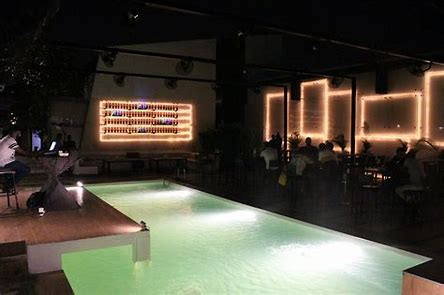
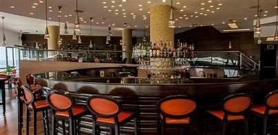
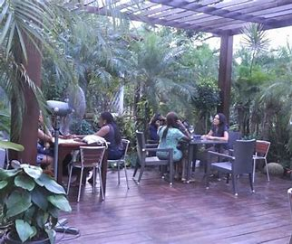

1) RSVP Lagos
Located at 9 Eletu Ogabi, Victoria Island, Lagos. This is a place to be in the suburb of Lagos. The menu of this restaurant is innovative and it is made up of a cocktail list that is good for her customers. RSVP offers an excellent consistent service. It is a great place to be for dinner and there you can dance well with your partner.
2) Sky Restaurant & Lounge
Located at RKO Hotel and Suites, 1415 Adetokunbo, Ademola Street, Victoria Island, Lagos. The dear of this restaurant is traditional and dated and every other thing makes up for it. The view is fantastic and their food is amazing with impeccable service. The restaurant is a top notch restaurant and it is best when you pick a table by the window. 3) Orchid Bistro
Located at 58A Isaac John Street, Ikeja Lagos. This restaurant which is found in Ikeja restaurant which is found in the Ikeja restaurant gives you a decent gateway that is away from the Lagos hustle. Their food is excellent and waiters are ever ready to attend. If you feel like going outdoors, there is a garden that is full of tulips where you can share love with your partner. for more information checkout:restuarants in lagos